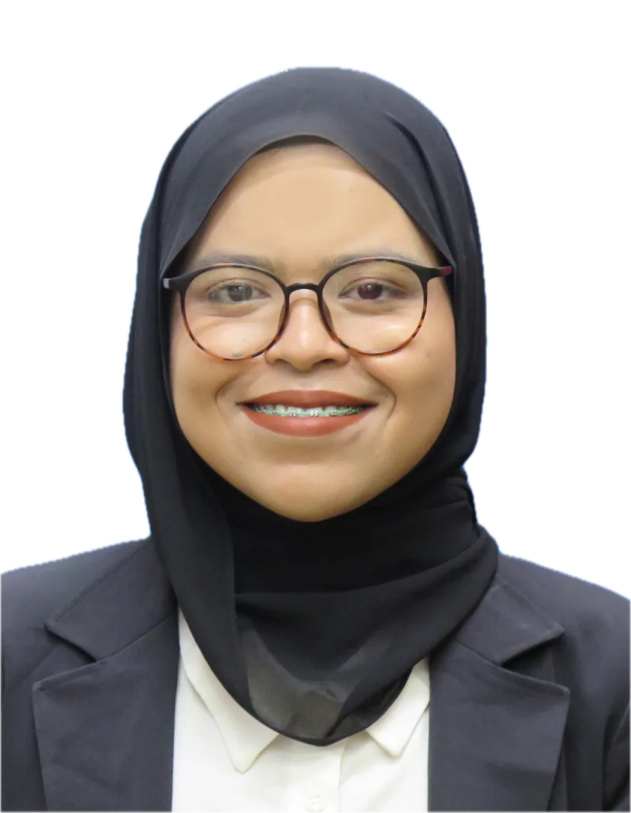

Full stack developer based in Kajang, Malaysia
Open to full stack and mobile developer roles
Zaitul Akmal

I build web and mobile software that people use every day, from warranty systems to museum kiosks.
- Now
- Full Stack Developer, EzCare Warranty
- Also
- Research Assistant, Universiti Malaya
Selected work
Apps on Google Play, systems built for clients and museums, and a research game for medical students. Open a project to see screenshots and how it was built.
Experience
Three roles running at once right now: product work at EzCare, research at Universiti Malaya, and part-time builds for Wariscan.
Skills
The tools I use in shipped products, client projects and research.
Education
- Bachelor of Computer Science (Hons)
Universiti Teknologi MARA2023 – 2025
CGPA 3.14 - Diploma in Computer Science
Universiti Teknologi MARA2020 – 2023
CGPA 3.73 - SPM
SMK Tunku Temenggung2019
7A 1B 1C
Certifications
Hiring, or have a project in mind?
I'm open to full stack and mobile developer roles. Email is the fastest way to reach me.
zaitulakmal02@gmail.com